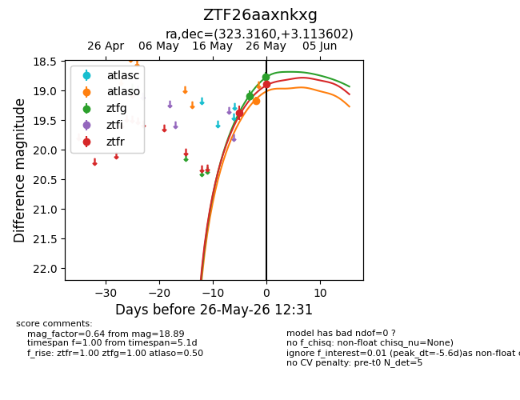
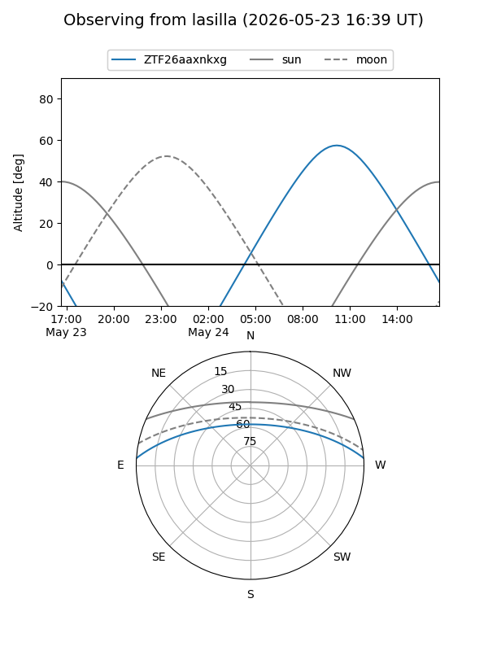
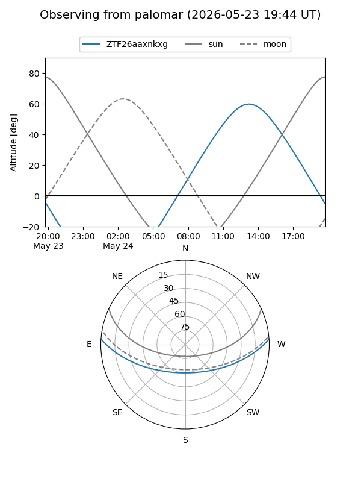

ZTF26aaxnkxg
Target ZTF26aaxnkxg at 2026-05-26 12:34
Aliases and brokers:
lsst-FINK: link
lsst-Lasair: link
lsst-ALeRCE: link
ztf-FINK: link
ztf-Lasair: link
ztf-ALeRCE: link
alt names
ZTF26aaxnkxg (ztf,fink_ztf)
Coordinates:
equatorial (ra, dec) = 323.3160,+3.11360
equatorial (HMS+DMS) = 21:33:15.85,+03:06:48.97
galactic (l, b) = (57.2775,-33.49527)
Flags:
Photometry:
last atlaso=19.17, ztfg=18.77, ztfr=18.89
1 atlaso, 2 ztfg, 2 ztfr detections
Lightcurve

Visibility


Additional plots